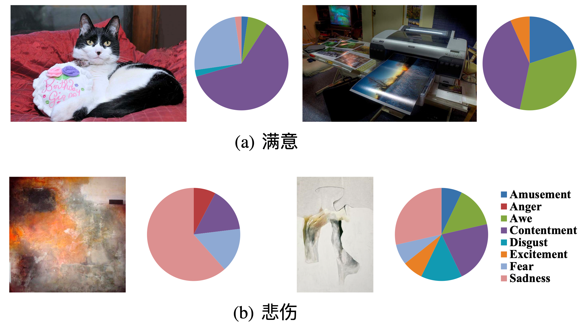
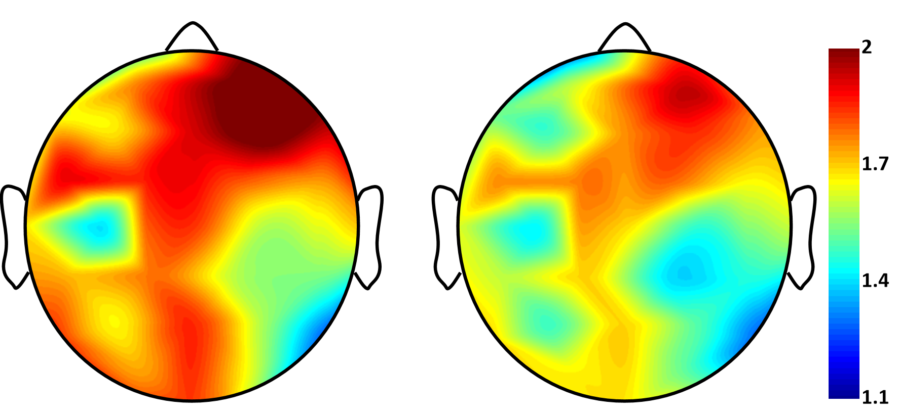
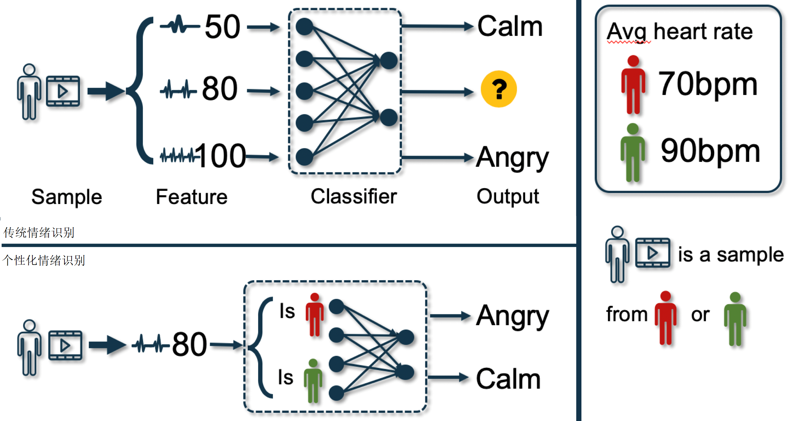
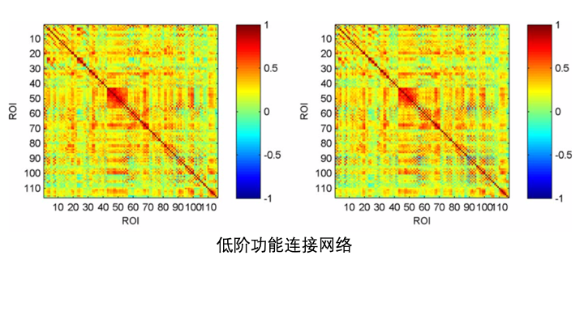
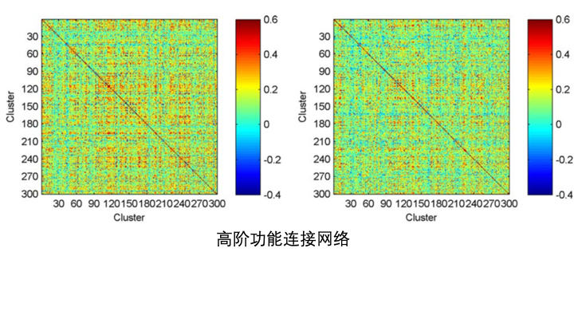
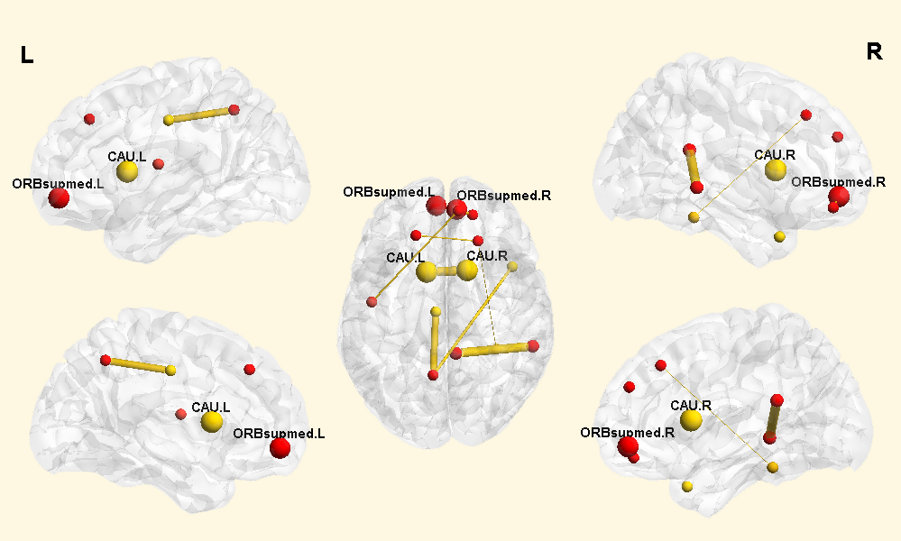
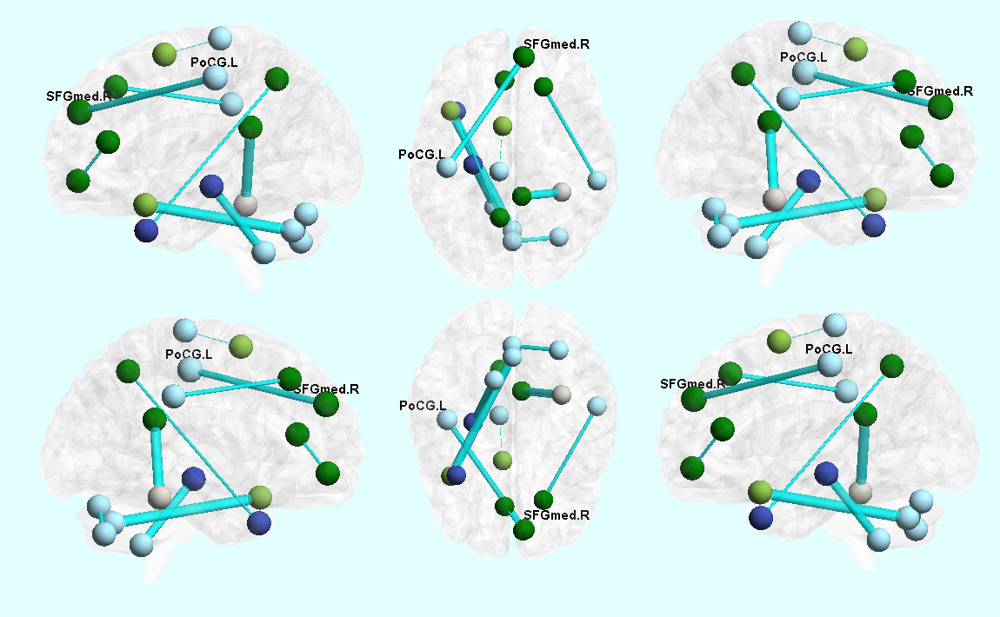

脑科学¶
图像情感预测与图像情感分布的差异¶
单词a和单词b是图像分类对于测试图像的目标结果；饼状图显示了通过情感预测对八种情感的目标分布。
旨在消除情绪鸿沟的具有识别度的图像特征已经有了显著的进步。基于观众对于图像的情绪能够达成共识，现有的工作主要将主导情感类别或情绪状态的平均值作为图像情感的标签。然而观众所感知的情绪受到个人和情景因素共同影响，往往是主观个性化的。因此我们提出将图像的分类转为离散的概率分布来更好的表征图像所隐含的情感信息。此外，我们的方法优化权重来显式的表达不同特征的重要性。
基于多超图神经网路的情感识别¶
Valence度量下正例与负例在不同脑区的，gamma频段脑电信号的方差
在关键领域的核心人工操作中，人员的情绪状态对于任务的完成有着巨大的影响。为了能够实时对人员的情绪状态进行评估，我们使用了多模态超图神经网络对多模态生理信号进行建模，最终将情绪识别任务转化为图结构的顶点分类问题。在这种结构中，不同模态生理信号之间以及不同样本（测试者，刺激）之间的复杂关联被有效的建模。此外，我们选取了不同频率段的脑电信号对情绪与脑电之间的相关性进行量化计算，已有的生物学的结论也和我们的计算结果一致。
基于多模态物理信号的情感识别¶
传统情绪识别 和 个性化情绪识别
传统情绪识别将来自不同测试者的样本在测试集和训练集平等对待，而没有考虑训练集和测试集中来自同一测试者的样本之间是否存在更强的关联，来自不同测试者之间的样本存在哪些个人的生理属性中的差异。在这种情景下，我们将个人的生理和心理特征在超图结构中建模，并且对不同模态的生理信号所揭示的样本间的复杂关联通过中间层融合机制自适应进行融合。从而达到个性化精确情绪感知。
脑网络建模与挖掘（高阶脑网络）¶
由静息态功能核磁共振成像技术估测得到的脑功能连接网络已经成为神经退化疾病精确诊断中一种比较具有前景的方法。然而传统的功能连接网络仅仅考虑了大脑区域之间的相关性，因此其本质是一个低阶网络。由这类脑网络得到的特征可能无法作为有效的疾病生物标记。针对这个问题，我们提出一种新的高阶功能连接相关性提取方法，该方法可以建模不同脑区对之间低阶相关性的相互作用。最后，我们通过实验验证了高阶功能连接网络在疾病诊断上的有效性。
  时序均值对诊断比较重要的连接
时序方差对诊断比较重要的连接
基于动态超图学习的小儿自闭症诊断¶
自闭症是一种由于神经系统失调导致的发育障碍，其病征包括不正常的社交能力、沟通能力、兴趣和行为模式。近年来许多研究发现自闭症与脑网络中某些连接的动态特性之间存在一定关联。本工作提出了一种小儿自闭症诊断算法，首先通过Lasso提取脑网络的动态特性，进一步通过动态超图学习实现自闭症诊断。我们在167个被试上进行了实验，5次交叉验证下诊断正确率达到76%，我们进一步提取出了对自闭症诊断比较重要的脑网络连接，这与之前的研究发现相一致。
论文列表
Junjie Zhu, Yuanbiao Wang, Yifan Feng, Sicheng Zhao, Xibin Zhao, Yue Gao |
Junjie Zhu , Xibin Zhao , Han Hu , Yue Gao |
Junjie Zhu, Yuxuan Wei, Yifan Feng, Xibin Zhao, Yue Gao |
Sicheng Zhao, Guiguang Ding, Yue Gao, Xin Zhao, Youbao Tang, Jungong Han, Hongxun Yao, Qingming Huang |
Sicheng Zhao, Amir Gholaminejad, Guiguang Ding, Yue Gao, Jungong Han, Kurt Keutzer. |
Sicheng Zhao, Hongxun Yao, Yue Gao, Guiguang Ding, Tat-Seng Chua. |
Sicheng Zhao, Yue Gao, Guiguang Ding, Tat-Seng Chua. |
Sicheng Zhao, Hongxun Yao, Yue Gao, Rongrong Ji, Guiguang Ding. |
Sicheng Zhao, Guiguang Ding, Yue Gao, Jungong Han. |
Zizhao Zhang, Shoujun Xu, Sichao Shen, Lei Wei, Baojuan Li, Yue Gao |